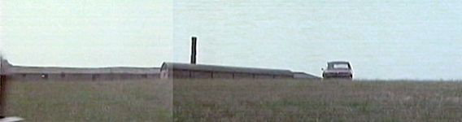
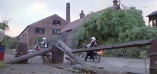
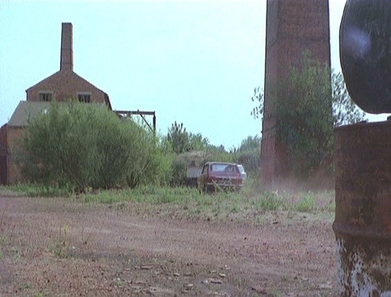

|
|
HELP FIND THE FOLLOWING LOCATIONS
PAGE 71
THE NEW AVENGERS: The Tale of the Big WhyE14: Malders Lane
brickworks, Pinkneys
Green, Berkshire (redeveloped): Bert Brandon
(George A. Cooper) ends
up at this deserted brick works. As
does Purdey.
(Steve Cann, September 2012)



Unknown 1: Bert Brandon (George A. Cooper) is ambushed by Roach (Gary Waldhorne) and Poole (Rowland Davis) and is killed. Purdey (Joanna Lumley) arrives to find the car in pieces. Mike Gambit (Gareth Hunt) is not far behind in his Range Rover.


Unknown 2: Mike Gambit (Gareth Hunt) and Purdey (Joanna Lumley) go to the village of Neverton in the range Rover to interview Frank Turner (Roy Marsden) at his farm. They meet Mrs. Turner (Maeve Alexander) who points them towards her husband. When they find hi he is being interrogated by Roach (Gary Waldhorne), Poole (Rowland Davis). After a quick skirmish Frank Turner is rescued and Roach and Poole run off.


 Neverton was Chalfont St. Giles
Neverton was Chalfont St. Giles
Unknown 3: Roach (Gary Waldhorne), Poole (Rowland Davis) hold Purdy (Joanna Lumley) for ransom in a quarry. Mike Gambit (Gareth Hunt) and Steed (Patrick Macnee) have to use their wits as they don’t have the contents of the mysterious box.

 This could be Gerrards Cross
Sand and Gravel Quarry, Wapsey's Wood,
Oxford Road, SL9 8TE, as
seen often in DOCTOR
WHO.
This could be Gerrards Cross
Sand and Gravel Quarry, Wapsey's Wood,
Oxford Road, SL9 8TE, as
seen often in DOCTOR
WHO.
Unknown 4: Frank Turner (Roy Marsden) attempts to take of in his crop duster plane, but Mike Gambit (Gareth Hunt) jumps on to the wing of the plane to prevent it taking off.


 This plane
was probably based at White Waltham Airfield
This plane
was probably based at White Waltham Airfield
Think you know a spot? Need a bigger image? Email me.
< Previous | Index | Avengerland | Next >
Copyright © 2021 Anthony R. McKay